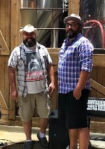

Chris Jupp Music
Chris Jupp has been entertaining audiences in the Southern Ontario area for over 20 years. Always singing and playing guitar, Chris has been a member of Corduroy, Last Exit, Soldiers of Harmony, Mixtape and many others while playing packed clubs from Sudbury to St Catherine’s. Always able to read the room and pull out a sing-a-long, Chris is just as likely to play a song that will make you put your bull horns up in the air.

With hundreds of songs available to play, he’s just as likely to give your request a try! Pearl Jam to Prince, Tom Petty to The Tragically Hip, Mellencamp to Metallica, you never know what you are gonna get next!
Soldiers of Harmony
This acoustic band is a duo with the addition of Simon Carroll on vocals and guitar, or a trio with the addition of a percussionist, depending on your event and/or budget. Multi part harmonies, and songs you never thought could be done acoustically, highlight the evening with this band.
Mixtape

This full band features Sid Lundy on drums/vocals, Vince Sciara on keys/vocals/guitar and Ken Corke on bass/vocals. Mixtape is a high energy rock band focussing on upbeat songs from the 70’s to the 90’s, with a sprinkle of 2000’s and a heavy stopover in the 80’s.